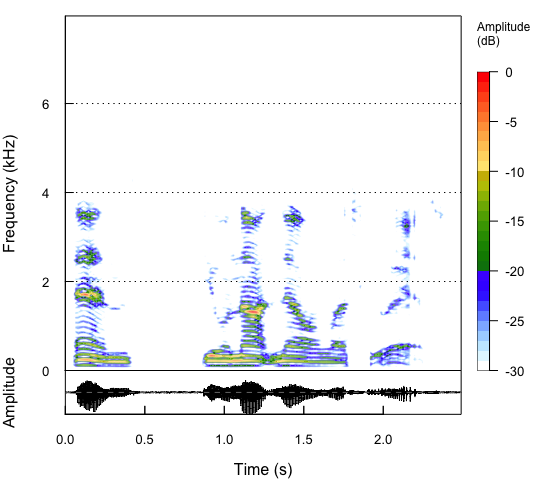
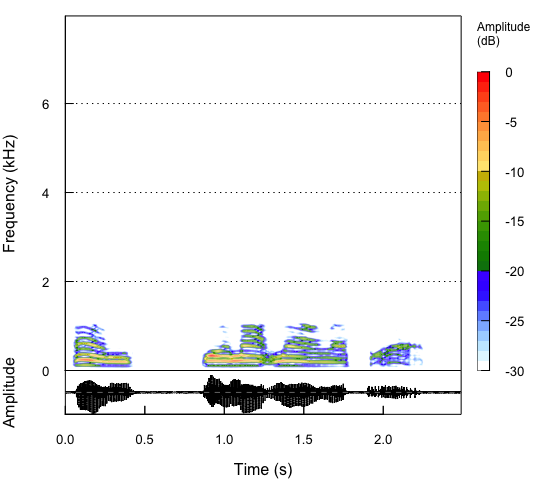
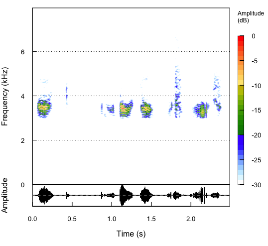

デジタル信号処理 まとめ
信号処理 講義14
(Press ? for help, n and p for next and previous slide)
復習
デジタル信号処理
- 計算機で信号を扱うための方法論
- 連続時間では扱えない
- 有限長のデータしか扱えない
- 処理の流れ
- アナログ信号をデジタル信号に変換 (A/D変換)
- 標本化 (sampling): 時間の離散化
- 計算機上でデジタル信号を処理
- デジタル信号をアナログ信号に変換 (D/A変換)
- アナログ信号をデジタル信号に変換 (A/D変換)
標本化定理
定理
信号 \(f(t)\) が \(B\,[\mathrm{Hz}]\) 未満の周波数 (Nyquist周波数)しか含んでいないなら， サンプリング周波数 \(2B\,[\mathrm{Hz}]\) を用いて元の信号は完全に求められる．

エイリアシング
折り返しによる雑音
\(4\pi B\) 周期の関数 \(\tilde{f}\) を構成する際に重なりが生じ， \((-2\pi B,2\pi B)\) 領域を切り出しても 元に戻すことができない．

離散 Fourier 変換と逆変換
定義
長さ \(N\) の信号 \(f(t),\;t=0,1,\dotsc,N{-}1\) の離散 Fourier 変換を以下で定義する．
\begin{equation} \hat{f}(n) =\frac{1}{\sqrt{N}}\sum_{t=0}^{N{-}1} f(t)e^{-i\frac{2\pi}{N}nt}, \quad (n=0,1,2,\dotsc,N{-}1) \end{equation}\begin{equation} f(t) =\frac{1}{\sqrt{N}}\sum_{n=0}^{N{-}1} \hat{f}(n)e^{i\frac{2\pi}{N}nt}, \quad (t=0,1,2,\dotsc,N{-}1) \end{equation}
行列による表現
変換行列
\begin{equation} F = \frac{1}{\sqrt{N}} \begin{pmatrix} 1&1&1&\dots&1\\ 1&\alpha^{-1}&\alpha^{-2}&\dots&\alpha^{-(N{-}1)}\\ \vdots&&&\ddots&\vdots\\ 1&\alpha^{-(N{-}1)}&\alpha^{-2(N{-}1)}&\dots&\alpha^{-(N{-}1)(N{-}1)} \end{pmatrix} \end{equation}\begin{equation} \alpha=e^{i\frac{2\pi}{N}} \end{equation}
逆変換行列
\begin{equation} F^{*} =\frac{1}{\sqrt{N}} \begin{pmatrix} 1&1&1&\dots&1\\ 1&\alpha^{1}&\alpha^{2}&\dots&\alpha^{(N{-}1)}\\ \vdots&&&\ddots&\vdots\\ 1&\alpha^{(N{-}1)}&\alpha^{2(N{-}1)}&\dots&\alpha^{(N{-}1)(N{-}1)} \end{pmatrix} \end{equation}
行列表現
\begin{equation} \begin{pmatrix} \hat{f}(0)\\ \hat{f}(1)\\ \vdots\\ \hat{f}(N{-}1) \end{pmatrix} = F \begin{pmatrix} f(0)\\ f(1)\\ \vdots\\ f(N{-}1) \end{pmatrix} \end{equation}\begin{equation} \hat{\boldsymbol{f}} =F \boldsymbol{f} \end{equation}\begin{equation} \boldsymbol{f} =F^{*} \hat{\boldsymbol{f}} \end{equation}
デジタル信号におけるフィルタの表現
標本化されたフィルタの表現 (周期関数の畳み込み)
\begin{align} g(t) &=f{*}h(t)\\ &=\sum_{s=0}^{N-1}f(s)h(t{-}s) =\sum_{s=0}^{N-1}f(t{-}s)h(s),\\ &\quad t=0,1,\dotsc,N-1 \end{align}- \(f,g,h\): 周期 \(N\) の関数
有限長のデータ
信号の一部の切り出し
- 周期的な信号として扱う
- 有界な台を持つ信号として扱う
\begin{equation} f(t)=w(t)\tilde{f}(t) \end{equation}- 端点での不連続性を軽減するために窓関数を導入
- 矩形窓 (単純な切り出し)
- gauss 窓
- hann 窓
- hamming 窓
スペクトログラム

加工後 (ローパスフィルタ)

加工後 (ハイパスフィルタ)
